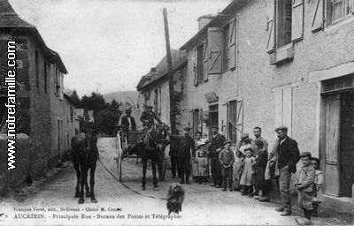

L'histoire d'Aucazein
Aucazein, ce petit village pittoresque de l'Ariège, est situé dans la vallée de la Bellongue, entouré de montagnes majestueuses et de forêts verdoyantes. Avec une population réduite et un patrimoine bien conservé, Aucazein incarne l’authenticité et la tranquillité de la campagne pyrénéenne. Les premières traces d’Aucazein : Les origines d'Aucazein remontent sans doute à l’époque gallo-romaine, même si peu de vestiges de cette période subsistent. Le village, comme beaucoup dans cette région, est fondé sur une tradition agricole et pastorale. Au fil des siècles, Aucazein a été marqué par les migrations des bergers et les influences de la culture pyrénéenne, profondément ancrée dans la vie quotidienne de ses habitants. Les influences médiévales et l’essor du village : Durant le Moyen Âge, Aucazein est intégré à la vallée de la Bellongue, où se développent des activités agricoles et pastorales. Les terres environnantes servaient à l'élevage de brebis et de chèvres, fournissant du lait, de la viande et surtout de la laine, qui a joué un rôle économique essentiel pour les habitants. Les échanges commerciaux avec d’autres vallées et villages ariégeois contribuaient également à l’économie locale, malgré les conditions de vie parfois rudes. L’empreinte religieuse est forte dans cette région ; l'église Saint-Martin, l'un des monuments principaux du village, témoigne de cette histoire. Datant du XIIᵉ siècle, cette église est un exemple de l’architecture romane qui caractérise plusieurs édifices religieux de la vallée. Le bâtiment a traversé les âges et conserve encore des éléments d’origine, bien que rénové à plusieurs reprises pour préserver son charme et son caractère historique. Les temps modernes : Au XIXᵉ siècle, comme dans de nombreux villages des Pyrénées, Aucazein a connu des changements socio-économiques liés à l’industrialisation. Toutefois, étant relativement isolé, le village a été épargné des transformations majeures, préservant ainsi son caractère rural. Le déclin de la population a commencé à s’observer, les jeunes générations partant pour des villes plus grandes en quête d'opportunités. Cependant, Aucazein a su s’adapter, en s’ouvrant notamment au tourisme au XXᵉ siècle. Les visiteurs, attirés par la beauté des montagnes et la sérénité des lieux, ont permis un renouveau du village. Aujourd’hui, les randonnées, le patrimoine culturel, et les traditions locales sont des atouts majeurs qui font la renommée d’Aucazein auprès des amoureux de la nature et de l’histoire. Aucazein aujourd’hui : Aujourd'hui, Aucazein est un village où l’on respire encore un air d’authenticité pyrénéenne. Les quelques familles qui y résident continuent de vivre au rythme des saisons, en préservant des pratiques ancestrales, comme la fabrication de fromage et l’élevage traditionnel. L'accueil chaleureux des habitants, le patrimoine culturel et naturel préservé, ainsi que la proximité avec d’autres villages de la vallée font d’Aucazein un endroit unique. Malgré son isolement et la diminution de sa population, Aucazein symbolise une résistance aux changements rapides du monde moderne, en offrant une parenthèse de paix et de simplicité. Sa petite taille n’entache en rien sa richesse historique, et pour ceux qui s’y aventurent, Aucazein révèle une facette précieuse de l’âme pyrénéenne.